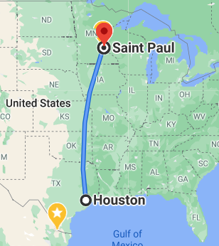
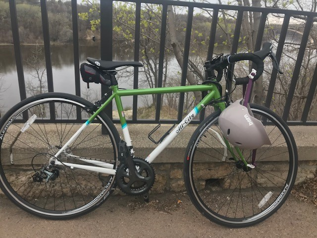

Introduction
I am 26 years old. My day to day job includes manual testing, but I am working my way to learn how to build automated regression suite. I graduated with a economics degree from CSBSJU in 2016. My current position is Engineering Analyst at Securian Financial.

Where I'm From
I have lived in Minnesota since 2012, but I grew up in Houston, Texas.

What are your favorite hobbies?
I enjoy cycling and learning how to sew.

What's your dream job?
I would like to be an Engineering Consultant advising on best practices when it comes to test automation and onboarding new technologies.
Where do you live?
I live in Saint Paul.
Why do you want to be a web developer?
I like understanding how systems work. I like working through problems and building logic structures.